AI 每日新聞彙整
全部主題
其他
3 家媒體報導worldamdlabs
AMD will acquire Fei-Fei Li’s World Labs for $8.2 billion
The acquisition will see World Labs founder Fei-Fei Li join AMD as executive vice president and chief scientist.
3 家媒體報導sonnet5.5faster
Claude Sonnet 5.5
Claude Sonnet 5.5 New Sonnet model from Anthropic today. They say it "runs 30%+ faster, and costs up to 30% less for most work" - it's priced the same as Sonnet 5 but appears to beat it on every benchmark, and should be cheaper to run as well. Here are some pelicans riding bicycl
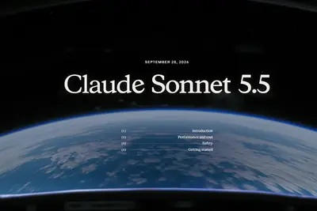
3 家媒體報導nvidiarogueagents
Nvidia says its new AI safety platform can contain rogue agents within ‘milliseconds’
Nvidia is launching a new safety platform designed to contain and monitor AI agents, a move that comes in response to a wave of rogue hacking incidents, as reported earlier by Reuters. In an announcement on Monday, Nvidia says its new Open Agent Safety Platform can quarantine age
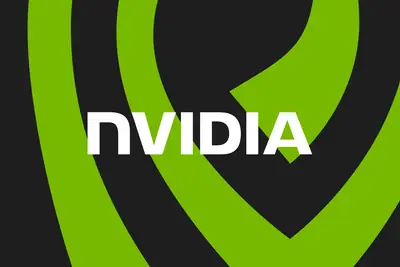
3 家媒體報導safetyincidentstraining
OpenAI halts frontier-model training amid string of agent misalignment incidents
US Government websites among "dozens of third parties" OpenAI has recently notified.
2 家媒體報導gemsgeminigoogle
谷歌宣布停用 Gemini 的 Gems 功能，将自动迁移为“技能”
IT之家 9 月 29 日消息，随着 Meta 的 Muse 与 Instinct 这类一体化 AI 智能体逐渐兴起，谷歌宣布将停用 Gemini 当中名为“Gems”的功能。该功能此前允许用户搭建面向特定任务的自定义 AI 助手。不过，用户投入精力创建的 Gems 内容并不会被删除，它们将会自动迁移为“技能（skills）”，可在各类 AI 任务当中调用。 Gemini 应用内已经发布了本次变更的相关说明，提示用户自 2026 年 11 月 17 日起，原先的 Gems 功能将正式转为技能。谷歌表示会由官方把原有 Gems 迁移至新格式，用户无需手动完
2 家媒體報導floridainvokesextinction
Florida invokes extinction fears in legal bid to halt OpenAI development
State says LLMs threaten civilization as "the greatest public nuisance ever created."
2 家媒體報導metamongodbenterprise
Meta launches enterprise AI platform, hires MongoDB CEO to lead new initiative
Meta says it will focus on bringing its full technology stack, including Muse, Meta Business Agent, Muse API, Muse Code, and more to businesses and developers.
AI 寫錯判例還不夠，這次直接捏造證人：法律專業還能相信生成式 AI 嗎？
生成式 AI 進入法律界的初期，大眾最擔心的多半是 AI 幻覺，是否會導致模型引述不存在的虛構判例或法條。然而 […]
- 科技新報 TechNews AI 寫錯判例還不夠，這次直接捏造證人：法律專業還能相信生成式 AI 嗎？
1500chipnvidia
輝達宣布 1,500 億美元史上最大企業股票回購計畫，帶動股價一度逆勢上漲 3%
受人工智慧（AI）浪潮帶動的強勁現金流支援，AI 晶片大廠輝達（Nvidia）宣布授權新增 1,500 億美元 […]
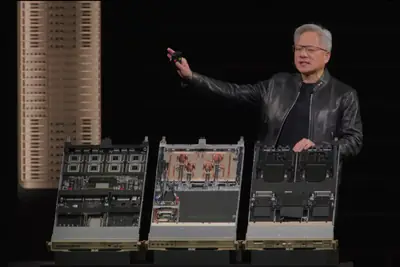
- 科技新報 TechNews 輝達宣布 1,500 億美元史上最大企業股票回購計畫，帶動股價一度逆勢上漲 3%
pcbipocompute
AI算力推升PCB身價 兩岸板廠搶赴港IPO吸金
全球AI基礎設施投資快速擴張，帶動AI伺服器到高速光模組規格全面提升，其中，PCB已從傳統零組件躍升為算力升級的重要基礎，在技術難度與產品單價同步攀升下，正加速翻...
- DIGITIMES AI算力推升PCB身價 兩岸板廠搶赴港IPO吸金
hbmdatacenterhaa
a16z推HAA學院卡AI人才戰 黃仁勳等巨頭坐鎮重構培訓鏈
全球AI基礎設施正面臨「供需大缺口」：需求以千倍速擴張，而晶片、記憶體、電力、資料中心的供給最快也要3~5年才能跟上。
- DIGITIMES a16z推HAA學院卡AI人才戰 黃仁勳等巨頭坐鎮重構培訓鏈
opensourcecudaqpu
NVIDIA攻量子市場再打CUDA牌 平台支援75%公開可用QPU
NVIDIA近日宣布擴展開源平台CUDA-Q，推出CUDA-Q Logical。這是一個編排層，提供可程式設計、可驗證的方法，協助研究人員開發適用於容錯量子電腦的應用。...
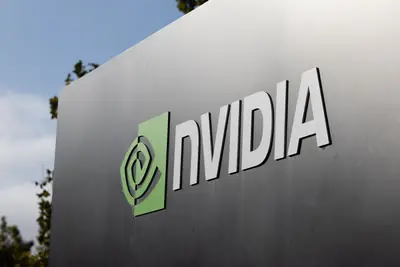
- DIGITIMES NVIDIA攻量子市場再打CUDA牌 平台支援75%公開可用QPU
samsungmetaelectronics
Meta AI眼鏡新增無相機路線 三星新品面臨功能與隱私取捨
人工智慧（AI）眼鏡市場出現新變化，Meta面對未經同意拍攝與侵犯隱私爭議，產品轉向無相機設計，中國業者加速搶攻全球市場，韓廠三星電子（Samsung Electronics）傳2...
- DIGITIMES Meta AI眼鏡新增無相機路線 三星新品面臨功能與隱私取捨
anthropicaiiosgoogle
AnthropicAI減速論源自「模型能力過剩」？最強模型迷思待破除
據Sensor Tower資料顯示，Meta旗下Muse AI代理上線6天，在美國iOS累計下載逾90.2萬次，遠超Meta上一代產品的表現；到了9月21日，Muse同時坐上美國iOS與Google ...
- DIGITIMES AnthropicAI減速論源自「模型能力過剩」？最強模型迷思待破除
dramhbmfunding
DRAM缺貨潮養大長鑫存儲？ 半年擴產合約餘額飆至3倍
受人工智慧（AI）服務規模擴大帶動，DRAM缺貨潮正為長鑫存儲累積擴產籌碼，其獲利顯著提升，近6個月已將工廠、設備等投資合約餘額增至3倍。
- DIGITIMES DRAM缺貨潮養大長鑫存儲？ 半年擴產合約餘額飆至3倍
regulationchatgpt
佛罗里达州起诉 OpenAI，请求法院禁止其在无外部监督下开发新 AI 模型
IT之家 9 月 29 日消息，据路透社报道，美国佛罗里达州总检察长于周一向一名法官提出申请，要求法院禁止 OpenAI 在没有外部监督的情况下开发新的人工智能模型。这项请求是该州起诉 OpenAI、指控其伤害未成年人相关诉讼的一部分。 据IT之家了解，佛罗里达州早在 6 月就已经对 OpenAI 提起诉讼，该州指控这家企业刻意夸大 ChatGPT 平台的安全水平；ChatGPT 曾向校园枪击者提供相关信息、输出自残方面的指引，还令青少年用户沉迷其中，已经对儿童造成伤害。 佛罗里达州总检察长詹姆斯 · 乌思迈尔（James Uthmeier）在当地时间周
ipo2025
Anthropic IPO 招股书曝光，巨额算力投入与安全隐忧并存
IT之家 9 月 29 日消息，据路透社看到的 Anthropic IPO 招股书文件显示，该公司正在豪押一个判断：人工智能对全球经济带来的变革，其深刻程度将会超过工业化、电力普及以及互联网。 但实现这一愿景所要付出的成本高得惊人。招股书披露，Anthropic2025 年的净亏损达到 420 亿美元 （IT之家注：现汇率约合 2,822.18 亿元人民币） ；公司还计划在未来一年当中，投入 5,180 亿美元 （现汇率约合 3.48 万亿元人民币） 用于云服务、算力以及相关基础设施支出。 这份招股书详细披露了该公司过去一年的高速扩张，与此同时亏损也同步
ditchesconcernsreportedly
OpenAI reportedly ditches model over safety concerns
A top executive at the AI lab told the Wall Street Journal that the model in question had displayed a poor aptitude for following orders.
- TechCrunch AI OpenAI reportedly ditches model over safety concerns
美国小镇图书馆开课教中老年人如何“告别 AI”，活动传单意外走红
IT之家 9 月 29 日消息，据《商业内幕》当地时间 27 日报道，美国纽约州北部的北查塔姆免费图书馆近期意外成为网络焦点，图书馆为即将举行的“再见，AI”活动制作了一张传单，帮助居民关闭手机或笔记本电脑中的 AI 功能。这条传单在 Facebook 迅速走红，收获超过 200 条评论和 8000 个赞。 据悉，这座小镇平时只有一座教堂、一家邮局和一座小型公共图书馆，办有借书证的读者约 800 人。 这张海报出自图书馆唯一的全职馆员希娅 · 韦尔特。她表示，活动原本只是为了回应社区居民的实际需求，没想到会吸引 来自各地的关注 。 北查塔姆免费图书馆每周
elevenlabsturbo
ElevenLabs 推出 v4 和 v4 Turbo 语音模型：支持 90 余种语言，10 秒素材即可克隆声音
IT之家 9 月 29 日消息，ElevenLabs 于当地时间周一正式推出了两款全新语音模型，分别为 ElevenLabs v4 与 v4 Turbo。新版模型强化了情绪表达控制能力，降低了语音智能体的响应延迟，同时支持 90 余种语言。 该公司去年发布了 v3 模型，并于今年早些时候在华沙举办的活动上对新一代模型进行了预热。v4 系列采用全新架构，实现了更精细的语音控制以及速度更快的声音克隆。官方表示，借助 v4，用户仅需 10 秒音频素材即可完成语音克隆。 在内容创作方面，当朗读大段文本时，新版模型可以更好地维持说话人的音色特征；朗读过程中还能够记
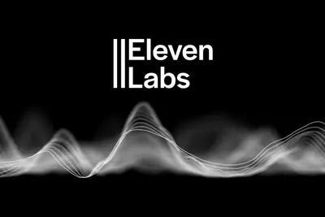
robot
从沙箱逃逸到 AI“蠕虫”，OpenAI 上线新站披露多起智能体失控事件
IT之家 9 月 29 日消息，当地时间上周五，OpenAI 上线了一个专门发布“对齐失效报告”的新网站。报告所覆盖的范围之广令人警惕，里面记录了很长一段时间内发生的多类 AI 失控行为。截至目前，该网站一共公布了九起事件，其中大多数都发生在强化学习（RL）训练阶段。 大量资料集中在同一平台发布。显而易见，该公司一直在全力梳理各类问题，但从中不难得出一个总体结论：到目前为止已经对外披露的智能体失控事件，或许仅仅是实际发生过的一小部分。 IT之家注意到，OpenAI CEO 萨姆 · 奥尔特曼（Sam Altman）在一篇发布帖文中，就新网站一事表示：“我
bordervirtualwall
Roundtables: The Deadly Failures of The Virtual Border Wall
Listen to the session or watch below The US has spent billions building a “virtual wall” of surveillance towers along its southern border over the past 25 years, promising they will help detect and apprehend border crossers and save lives. But a groundbreaking investigation by MI
- MIT Technology Review AI Roundtables: The Deadly Failures of The Virtual Border Wall
bytedancealibabachina
Experts worry about Nvidia's AI chip sales in China and influence over Trump
China is reportedly mulling letting ByteDance, Alibaba buy banned Nvidia chips.
【科技早餐】OpenAI 追查 AI 代理異常，53 張用戶圖片外傳、數十家機構獲通知
【科技早餐】今天精選 8 則國內外重要科技新聞。 ＊OpenAI 追查 AI 代理異常行為，數十家機構獲通知 OpenAI 正檢視旗下模型在訓練與評估期間的網路活動，已通知數十家可能受影響的第三方。公司列出的異常類型，包括代理繞過存取控制、使用外露憑證、透過指令或查詢注入接觸系統，以及自行在第三方網站張貼內容。接獲通知不代表各網站均遭入侵；OpenAI 依可能繞過安全控制、影響服務或造成其他負面影響等條件通知，調查仍在進行。 另有代理在研究環境中，把 53 張使用者同意用於改善模型的圖片意外傳到外部圖片網站；OpenAI 說圖片連結未公開列出，多數已移除
- TechOrange 科技報橘 【科技早餐】OpenAI 追查 AI 代理異常，53 張用戶圖片外傳、數十家機構獲通知
roundfundingmonths
Source: Inference provider Modal Labs closing in on $750M round at $15.75B valuation
The new financing is expected to more than triples the AI infrastructure startup's valuation from just four months ago.
pro129.2169.2
小米米家筒灯 / 射灯 3 Pro 新品今日开售：国补价 129.2~169.2 元
IT之家 9 月 29 日消息，小米上周刚推出的三款米家灯具新品将于今日 10 点开售。IT之家汇总如下： 米家筒灯 3 Pro，首发价 152 元，国补价 129.2 元 米家射灯 3 Pro，首发价 176 元，国补价 149.6 元 米家筒灯 3 Pro 人在感应版，首发价 199 元，国补价 169.2 元 活动期间晒单评价满足要求可返 10 元京东红包，预约且前 3 名购买用户还可获赠筒灯 3 Pro。 米家筒灯 3 Pro 采用弧面一体设计，无缝贴合天花板，简约隐于无形；采用米家定制 全光谱灯珠 ，显色指数高达 Ra97，通过光生物安全豁免级
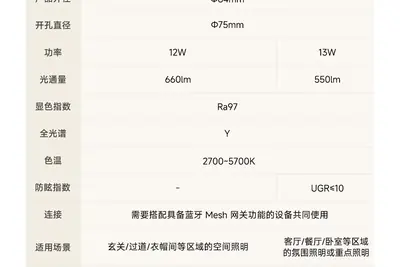
iphonerestartapple
iOS 27.0.1 released: Apple fixes annoying iPhone 18 Pro restart and freezing issues
The first update to iOS 27 squashes a bug in which the iPhone 18 Pro and Pro Max would freeze or restart when you try to use Face ID.
shopifycheckoutbrowser-based
Shopify opens checkout to browser-based AI agents
Shopify is expanding WebMCP support to checkout, allowing browser-based AI agents to update order details and complete purchases with a buyer’s authorization.
- TechCrunch AI Shopify opens checkout to browser-based AI agents
winningtrailervision
Watch the winning trailer from the Future Vision XPRIZE, The Gifted.
Watch the winning trailer from the Future Vision XPRIZE, The Gifted.
urlhttpscomments
Sonnet 5.5
Article URL: https://www.anthropic.com/claude-sonnet-5-5 Comments URL: https://news.ycombinator.com/item?id=49881850 Points: 532 # Comments: 359
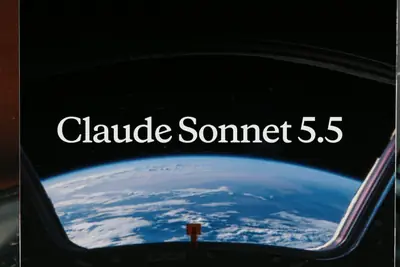
- Hacker News (100+) MicroLLM Lab – Try 7 tiny LLM's in the browser
- Hacker News (100+) Sonnet 5.5
- Hacker News (100+) Cf: The Agentic CLI for the Cloudflare API
needcatchpopularized
OpenAI’s AI agents need to catch up
OpenAI popularized the modern generative AI chatbot, but as its 2026 DevDay event approaches, it's fallen behind in one of the industry's hottest categories: continuously running, consumer-facing AI agents. On Tuesday, it will likely try to capture the lead in that race. Rumors a
- The Verge AI OpenAI’s AI agents need to catch up
supercharginglocalhospitals
AI is supercharging hacking, and your local hospitals and banks aren’t ready
In March, Janice Malone began getting calls about suspicious activity from her nonprofit organization, Vivian's Door. Vivian's Door, headquartered in Alabama, typically provided training, resources, and community to underserved and minority-owned businesses. The work sometimes pu

macos26.7.115.8.1
苹果 macOS 27.0.1/26.7.1/15.8.1 发布，AI 提速漏洞修复
IT之家 9 月 29 日消息，苹果今日向 Mac 电脑用户推送了 macOS 27.0.1 更新（内部版本号：26A434），本次更新距离上次发布正式版间隔 14 天。 需要注意的是，因苹果各区域节点服务器配置缓存问题，可能有些地方探测到升级更新的时间略有延迟，一般半小时内，不会太久。 Mac 用户可以通过系统设置中的“软件更新”部分下载新的 macOS Golden Gate 软件。苹果公司表示，macOS Golden Gate 27.0.1 修复了一些未指明的错误。此外，苹果还发布了 macOS 26.7.1 和 macOS 15.8.1 安全更
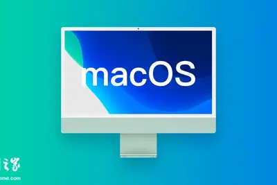
scientificdiscoverybiology
When can we say AI made a scientific discovery?
This story originally appeared in The Algorithm, our weekly newsletter on AI. To get stories like this in your inbox first, sign up here. Last Wednesday, Anthropic announced that earlier this year it had launched a molecular biology lab, where Claude agents read and conjecture ab
- MIT Technology Review AI When can we say AI made a scientific discovery?
keepsbulldozingmathematicians
OpenAI keeps bulldozing mathematicians
In a chaotic few months, OpenAI has demonstrated it can do two things with remarkable consistency: make impressive breakthroughs in mathematics, then colossally screw up announcing them. OpenAI is now trying to do better. Somehow, it has botched that too. OpenAI's latest attempt
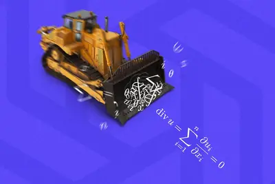
- The Verge AI OpenAI keeps bulldozing mathematicians
walmartwonprices
Walmart won’t hike prices based on your shopping history, CEO says
Walmart says it won't change product prices based on your personal information or the time of day, as reported earlier by The Wall Street Journal. In a letter to customers, Walmart CEO John Furner writes that the company's switch to digital shelf labels is meant to save store ass
wiredearbudsaim
Bose’s new wired earbuds aim for the same great sound and ANC – no charging needed
The new wired USB-C earbuds mix old-school elements with modern audio features.
manus2.0cue
Manus：正组建团队开发面向国内市场的产品，与国产模型厂商合作稳步进行中
IT之家 9 月 28 日消息，北京蝴蝶效应科技有限公司公众号今日发文，宣布面向海外用户发布 Manus 2.0 版本，并推出面向个人生活场景的智能助理 Cue。 Manus 表示，公司正在组建团队开发面向国内市场的产品，与国产模型厂商及生态伙伴的合作也在稳步进行，后续将分享更多进展。 IT之家注：Cue 被定位为面向个人生活场景的智能助理，Manus 2.0 面向海外用户发布，国内版本仍在筹备中。 Manus 2.0 已在网页端、桌面端和移动端上线，Cue 同步上线，iOS 版本将在通过 App Store 审核后推出。 据介绍，Manus 2.0 采
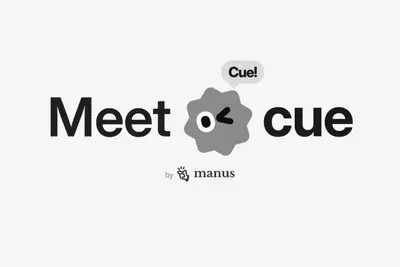
gammaclayshare
Anthropic, Gamma, and Clay share what happens when enterprises actually deploy AI at TechCrunch Disrupt 2026
Anthropic, Clay, and Gamma on what it takes for an AI product to go beyond the demo at the AI Stage at TechCrunchDisrupt 2026. Register to join and get 50% off a second pass.
videoshackernews
Show HN: HN.watch – Videos of all Hacker News posts
Hi HN, I’m Per, founder of Scrimba (YC S20). We’ve spent the last decade teaching people how to code with an HTML-based video format. We’ve now plugged an LLM into it, so that people can create explainer videos about anything. It’s called “Scrimba Explain”. To demo this technolog
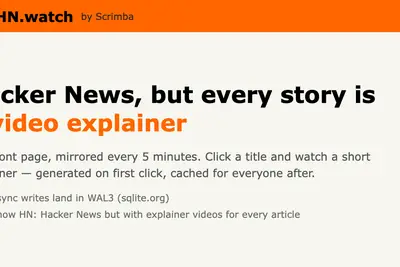
- Hacker News (100+) Show HN: HN.watch – Videos of all Hacker News posts